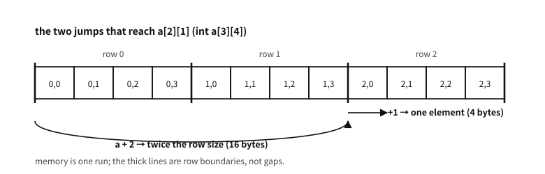

39 Multidimensional arrays
What to know first
Looking back
Chapter 38 said a[i] is sugar for *(a + i), and that adding an integer to a pointer moves it by the size of the type pointed at. Then in int a[3][4], how many bytes does a + 1 move?
A. Sixteen — not one int (four) but one row of four ints. The key is what the elements of a are. int a[3][4] is “three arrays of four ints”, so one element of a is a whole row (int[4]). Nothing in chapter 38′s rule changed — “move by one element” applied exactly as before; it is just that the element is itself an array.
This chapter is everything that grows out of that one sentence.
The need for this chapter, and its context
By the end of this chapter
int **, how far you may go in viewing one address through different types, and the patterns of practice (leading dimension, row pointers, strides) along with what traversal order does in matrix work.The questions this chapter answers
- Are there languages that lay them out column-major?
- Then why are
a[i][j]anda[j][i]different places? Both are just additions. - May I take
int *p = &a[0][0];and sweep it flat asp[7]? It is the same memory and the offset works out. - Is the submatrix the only gain from keeping a separate stride?
39.1 An array of arrays — the substance first
There is only one way to read int a[3][4]: three arrays of four ints. “Three rows by four columns” is the human reading; what the type says is “an array whose element is int[4]”.
examples-en/ch39/md_layout.c
/* What a multidimensional array really is — sizes, addresses, and how a
subscript expression unfolds. */
#include <stdio.h>
int main(void)
{
int a[3][4] = {
{ 11, 12, 13, 14 },
{ 21, 22, 23, 24 },
{ 31, 32, 33, 34 },
};
/* -- (1) what, and how many ------------------------------------ */
printf("sizeof a = %2zu (three rows of four ints)\n", sizeof a);
printf("sizeof a[0] = %2zu (one row = four ints)\n", sizeof a[0]);
printf("sizeof a[0][0] = %2zu (one element)\n\n", sizeof a[0][0]);
/* -- (2) memory is one run — row-major -------------------------- */
printf("as byte offsets from the start:\n");
const char *base = (const char *)&a[0][0];
for (int i = 0; i < 3; i++) {
printf(" row %d:", i);
for (int j = 0; j < 4; j++)
printf(" a[%d][%d]=+%02td", i, j, (const char *)&a[i][j] - base);
printf("\n");
}
printf(" the last subscript varies fastest (row-major).\n\n");
/* -- (3) unfolding a[2][1] by hand ------------------------------ */
puts("a[2][1], step by step (addresses as byte offsets from a):");
printf(" a type int(*)[4], +%td\n",
(const char *)a - base);
printf(" a + 2 step = sizeof(int[4]) = %zu -> +%zu, offset +%td\n",
sizeof(int[4]), 2 * sizeof(int[4]), (const char *)(a + 2) - base);
printf(" *(a + 2) type int[4] -> decays to int*, offset +%td\n",
(const char *)*(a + 2) - base);
printf(" *(a+2) + 1 step = sizeof(int) = %zu -> +%zu, offset +%td\n",
sizeof(int), 1 * sizeof(int), (const char *)(*(a + 2) + 1) - base);
printf(" *(*(a+2)+1) value = %d, a[2][1] = %d (the same)\n\n",
*(*(a + 2) + 1), a[2][1]);
/* -- (4) same address, different types -------------------------- */
printf("a, a[0], &a[0][0], &a are all the same address (offset 0):\n");
printf(" a +%td (int(*)[4])\n", (const char *)a - base);
printf(" a[0] +%td (int*)\n", (const char *)a[0] - base);
printf(" &a[0][0] +%td (int*)\n", (const char *)&a[0][0] - base);
printf(" &a +%td (int(*)[3][4])\n", (const char *)&a - base);
printf("but one step means a different distance:\n");
printf(" a + 1 -> +%td bytes (one row)\n",
(const char *)(a + 1) - (const char *)a);
printf(" a[0] + 1 -> +%td bytes (one element)\n",
(const char *)(a[0] + 1) - (const char *)a[0]);
printf(" &a + 1 -> +%td bytes (the whole array)\n",
(const char *)(&a + 1) - (const char *)&a);
return 0;
}
Output
sizeof a = 48 (three rows of four ints)
sizeof a[0] = 16 (one row = four ints)
sizeof a[0][0] = 4 (one element)
as byte offsets from the start:
row 0: a[0][0]=+00 a[0][1]=+04 a[0][2]=+08 a[0][3]=+12
row 1: a[1][0]=+16 a[1][1]=+20 a[1][2]=+24 a[1][3]=+28
row 2: a[2][0]=+32 a[2][1]=+36 a[2][2]=+40 a[2][3]=+44
the last subscript varies fastest (row-major).
a[2][1], step by step (addresses as byte offsets from a):
a type int(*)[4], +0
a + 2 step = sizeof(int[4]) = 16 -> +32, offset +32
*(a + 2) type int[4] -> decays to int*, offset +32
*(a+2) + 1 step = sizeof(int) = 4 -> +4, offset +36
*(*(a+2)+1) value = 32, a[2][1] = 32 (the same)
a, a[0], &a[0][0], &a are all the same address (offset 0):
a +0 (int(*)[4])
a[0] +0 (int*)
&a[0][0] +0 (int*)
&a +0 (int(*)[3][4])
but one step means a different distance:
a + 1 -> +16 bytes (one row)
a[0] + 1 -> +4 bytes (one element)
&a + 1 -> +48 bytes (the whole array)
The first block of the demonstration is the check. sizeof a is 48 (the whole), sizeof a[0] is 16 (one row), sizeof a[0][0] is 4 (one element). The elements of a are rows; the elements of a row are ints.
Memory is one run. In the second block the offsets from a[0][0] to a[2][3] run 0, 4, 8 … 44 with no gaps. The standard pins this layout down — the last subscript varies fastest (row-major). A multidimensional array does not fold memory into a grid; it is one line with the rows laid end to end.
Q. Are there languages that lay them out column-major?
A. Yes. Fortran is the classic one, along with MATLAB, R, Julia, and OpenGL’s matrix convention. Neither is correct in the abstract — it is a convention, and C chose row-major.
Where the difference bites is clear: calling numeric libraries written in Fortran (BLAS, LAPACK) from C. The same memory is read in a different order, so passing it straight across is passing the transpose. That is why such APIs almost always carry an argument saying “read this matrix transposed” (CblasRowMajor / CblasColMajor, or a trans flag).
39.2 How a subscript unfolds
a[i][j] is not magic. It is chapter 38′s two rules applied twice.
Followed one step at a time, with the types:
| expression | type | size of one step |
|---|---|---|
a | int[3][4] → decays to int (*)[4] | — |
a + i | int (*)[4] | sizeof(int[4]) = 16 bytes |
*(a + i) | int[4] → decays to int * | — |
*(a + i) + j | int * | sizeof(int) = 4 bytes |
*(*(a + i) + j) | int (an lvalue) | — |
Table 39.1
The third block of the demonstration shows that table as actual numbers: a + 2 lands at offset +32 (= 2 × 16), *(a+2) + 1 at +36 (= 32 + 1 × 4). Out comes the value of a[2][1].
There is no new rule here. Chapter 38 said “pointer plus integer moves by the element size”; this time the element happened to be int[4]. Half of what makes multidimensional arrays feel hard is missing that.

Figure 39.1 — The two jumps that reach a[2][1] — one row-sized, one element-sized.
Q. Then why are a[i][j] and a[j][i] different places? Both are just additions.
A. Additions, but multiplied by different factors. Written out in bytes the offset is i × 16 + j × 4. The factor on i (the size of a row) and the factor on j (the size of an element) differ, so swapping them lands elsewhere — a[1][2] is +24 and a[2][1] is +36.
In general, for T a[d_1][d_2]...[d_n] the offset of a[i_1]...[i_n] is
Every inner dimension enters as a factor, so only the outermost dimension is never used in the computation — which is why the first dimension may be omitted in a parameter (next section).
39.3 Parameters — why it is not int **
Chapter 38 said an array parameter decays to a pointer but only the outermost dimension is stripped. Here is what that means in more than one dimension.
void f(int m[3][4]); /* the three are one and the same declaration */
void f(int m[][4]);
void f(int (*m)[4]);The outer 3 goes and the 4 stays. The offset formula above is the reason — what the computation needs is the inner dimensions; the outer one is unused. So inner dimensions must be written (int m[][] does not compile) and the outer may be written but is not checked.
examples-en/ch39/md_param.c
/* Three layouts for passing a 2-D array to a function — and why it is not int**. */
#include <stdio.h>
#include <stdlib.h>
/* (1) Fixed width: the inner dimension stays in the type.
The three spellings are the same declaration to the compiler. */
static int sum_fixed(int m[3][4]) { int s = 0; for (int i=0;i<3;i++) for (int j=0;j<4;j++) s += m[i][j]; return s; }
/* These two are *exactly the same* declaration (see the text):
static int sum_fixed(int m[][4]);
static int sum_fixed(int (*m)[4]); */
/* (2) VLA parameter (C99): the width arrives at run time — the way for numeric code */
static int sum_vla(size_t rows, size_t cols, const int a[rows][cols])
{
int s = 0;
for (size_t i = 0; i < rows; i++)
for (size_t j = 0; j < cols; j++) s += a[i][j];
return s;
}
/* (3) An array of row pointers: a different layout — rows may live apart */
static int sum_rows(size_t rows, size_t cols, int *const rowp[rows])
{
int s = 0;
for (size_t i = 0; i < rows; i++)
for (size_t j = 0; j < cols; j++) s += rowp[i][j];
return s;
}
int main(void)
{
int a[3][4] = { {1,2,3,4}, {5,6,7,8}, {9,10,11,12} };
printf("(1) fixed width sum_fixed(a) = %d\n", sum_fixed(a));
printf("(2) VLA param sum_vla(3,4,a) = %d\n", sum_vla(3, 4, a));
/* build an array of row pointers over the same data */
int *rowp[3] = { a[0], a[1], a[2] };
printf("(3) row pointers sum_rows(3,4,rowp) = %d\n\n", sum_rows(3, 4, rowp));
/* see the difference in layout */
printf("the layouts differ:\n");
printf(" a : int[3][4] — one run of %zu bytes, 0 indirections\n", sizeof a);
printf(" rowp : int*[3] — %zu bytes of pointers + the rows, 1 indirection\n", sizeof rowp);
/* the cost of swapping rows differs */
int *tmp = rowp[0]; rowp[0] = rowp[2]; rowp[2] = tmp; /* only two pointers move */
printf("\nswap the row pointers and the order changes with the data untouched: ");
for (size_t j = 0; j < 4; j++) printf("%d ", rowp[0][j]);
printf("\n (doing the same on a 2-D array means actually moving 16 bytes)\n");
/* jagged rows — a layout a 2-D array cannot have */
int r0[] = { 1 }, r1[] = { 2, 3, 4 };
int *jag[2] = { r0, r1 };
size_t len[2] = { 1, 3 };
printf("\njagged rows: ");
for (size_t i = 0; i < 2; i++)
for (size_t j = 0; j < len[i]; j++) printf("%d ", jag[i][j]);
printf("\n");
return 0;
}
Output
(1) fixed width sum_fixed(a) = 78
(2) VLA param sum_vla(3,4,a) = 78
(3) row pointers sum_rows(3,4,rowp) = 78
the layouts differ:
a : int[3][4] — one run of 48 bytes, 0 indirections
rowp : int*[3] — 24 bytes of pointers + the rows, 1 indirection
swap the row pointers and the order changes with the data untouched: 9 10 11 12
(doing the same on a 2-D array means actually moving 16 bytes)
jagged rows: 1 2 3 4
A common misconception. “A 2-D array can be received as int **”
The most common and most expensive misconception. int a[3][4] decays to int (*)[4], not to int **. The two have entirely different layouts.
int (*)[4] points at the first row of a place where twelve ints lie in a row. One address computes every slot. int ** points at a place where pointers to int lie in a row — finding a slot means following an address twice, and that array of pointers has to actually exist.
So passing a real 2-D array to a function taking int ** is rejected by the compiler. Force it through with a cast and you get ints mistaken for addresses and followed — a collapse with no diagnostic. The third block of the demonstration puts the two layouts, with their sizes and indirection counts, side by side.
The VLA parameter earns its keep here (chapter 38). Even when the width is settled at run time, the a[i][j] notation still works.
void sum(size_t rows, size_t cols, const int a[rows][cols]);Taking the sizes first is the rule — the names used as dimensions must already be declared. This is the most readable form in modern numeric code, and the default this book recommends.
39.4 One address, different eyes — the contract of flattening
The last block of the demonstration is where this section starts. a, a[0], &a[0][0] and &a are all the same address. But their types differ, so one step means a different distance — 16, 4, 4 and 48 bytes respectively. Holding the same number does not mean being able to do the same things with it (chapter 35′s “an address is not simply an integer” made flesh).
Which raises the natural question.
Q. May I take int *p = &a[0][0]; and sweep it flat as p[7]? It is the same memory and the offset works out.
A. It works on essentially every compiler, but by the letter of the standard it is outside the contract. The reason has to be separated carefully — two rules are entangled here and only one of them bites.
Strict aliasing (§6.5) is not the problem. That rule says not to read an object through an lvalue whose type does not match the object’s effective type, and the thing being read here, a[i][j], has effective type int either way. Reading it through an int lvalue breaks nothing.
What bites is the range of the pointer arithmetic (§6.5.6, and chapter 37′s provenance). &a[0][0] points at the first element of a[0], an array of four. Where that pointer may go is inside a[0] and one past its end. p + 4 is that one-past position — it may be formed but not dereferenced — and p + 5 is outside the contract from the moment it is formed. That a[1][0] happens to sit at that address is beside the point: the rule is about provenance, not about addresses.
The grey zone is old, and the committee knows what practice does. The rule stands because optimisers lean on the promise — “this pointer only moves inside that row” has to be believable before a loop can be rewritten (the same logic as chapter 38′s real case).
In practice. The other direction is sound — allocate flat, view as 2-D
The practical answer is to reverse the direction. Instead of sweeping a declared 2-D array flat, view flat memory as two-dimensional.
double *m = malloc(rows * cols * sizeof *m);
double (*view)[cols] = (double (*)[cols])m; /* a 2-D view */
view[i][j] = ...;This direction is sound for a reason. Memory from malloc has no declared type, and the standard settles the effective type of such an object as “the type of the lvalue used to store into it” (§6.5). Writing through a 2-D shape makes that shape the effective type. And the range for the arithmetic is the whole allocated block, so no sweep leaves its provenance.
Hence the working rule: if you want to handle it flat, allocate it flat. If you really must pass a declared 2-D array around flat, handle it row by row or move it with memcpy.
39.5 The patterns of practice
There are four ways multidimensional data is handled. Here they are with where each is actually used.
| Pattern | Shape | Layout | Where it is seen |
|---|---|---|---|
| Fixed-width 2-D | int a[R][C], int (*)[C] | One run | Frame buffers, game boards, embedded tables |
| VLA parameter | a[rows][cols] | One run | Numeric code; the default since C99 |
| Flat + leading dimension | a[i * lda + j] | One run | BLAS, LAPACK, submatrices |
| Array of row pointers | int *rows[R], int ** | Rows apart | argv, image libraries, jagged rows |
Table 39.2
39.5.1 Flat plus a leading dimension — the lingua franca of numeric libraries
examples-en/ch39/md_flat.c
/* Allocate flat, view as 2-D — the BLAS-style pattern (leading dimension, submatrix). */
#include <stdio.h>
#include <stdlib.h>
/* Leading dimension (lda): the *stride* from one row to the next.
It may differ from the column count — which is what makes submatrices free. */
#define AT(a, lda, i, j) ((a)[(size_t)(i) * (size_t)(lda) + (size_t)(j)])
static void fill(double *a, size_t lda, size_t rows, size_t cols)
{
for (size_t i = 0; i < rows; i++)
for (size_t j = 0; j < cols; j++)
AT(a, lda, i, j) = (double)(10 * (i + 1) + (j + 1));
}
static void show(const char *tag, const double *a, size_t lda,
size_t rows, size_t cols)
{
printf("%s (lda=%zu):\n", tag, lda);
for (size_t i = 0; i < rows; i++) {
printf(" ");
for (size_t j = 0; j < cols; j++) printf("%5.0f", AT(a, lda, i, j));
printf("\n");
}
}
int main(void)
{
const size_t rows = 4, cols = 5;
/* one run — check the multiplication for overflow first (chapter 87's habit) */
size_t n;
if (__builtin_mul_overflow(rows, cols, &n)) return 1;
double *m = malloc(n * sizeof *m);
if (!m) return 1;
fill(m, cols, rows, cols);
show("whole 4x5", m, cols, rows, cols);
/* (1) A 2-D view — memory from malloc has no declared type, so putting
an array shape on it is the sound direction (see the text). */
double (*view)[cols] = (double (*)[cols])m;
printf("\nthrough the view, view[2][3] = %.0f (flat: m[2*5+3] = %.0f)\n",
view[2][3], m[2 * 5 + 3]);
/* (2) A submatrix — pointing, not copying.
Rows 1..2, columns 1..3: a 2x3 block. The stride stays 5. */
double *sub = &AT(m, cols, 1, 1);
printf("\na submatrix is a start plus a stride, not a copy:\n");
show(" sub 2x3", sub, cols, 2, 3);
/* write through the submatrix and the original changes — it is a view */
AT(sub, cols, 0, 0) = -1;
printf("\nwriting -1 at sub(0,0) changes the original at (1,1):\n");
show("whole 4x5", m, cols, rows, cols);
/* (3) Transposition becomes a stride question too — only the reading order changes */
printf("\nreading transposed (row step 1, column step %zu):\n", cols);
for (size_t j = 0; j < cols; j++) {
printf(" ");
for (size_t i = 0; i < rows; i++) printf("%5.0f", AT(m, cols, i, j));
printf("\n");
}
free(m);
return 0;
}
Output
whole 4x5 (lda=5):
11 12 13 14 15
21 22 23 24 25
31 32 33 34 35
41 42 43 44 45
through the view, view[2][3] = 34 (flat: m[2*5+3] = 34)
a submatrix is a start plus a stride, not a copy:
sub 2x3 (lda=5):
22 23 24
32 33 34
writing -1 at sub(0,0) changes the original at (1,1):
whole 4x5 (lda=5):
11 12 13 14 15
21 -1 23 24 25
31 32 33 34 35
41 42 43 44 45
reading transposed (row step 1, column step 5):
11 21 31 41
12 -1 32 42
13 23 33 43
14 24 34 44
15 25 35 45
This is the most widely used pattern in numerical computing. Its heart is separating the column count from the row stride.
- The column count (
cols) is how many columns this matrix actually uses. - The leading dimension (
ldain BLAS) is the distance from one row to the next.
The power comes from those two not having to be equal. Keep lda as it is and move only the starting point, and a submatrix appears with no copying. In the demonstration sub points at the original’s (1,1) with the stride still 5 — so writing through sub changes the original. It is a view.
This design is also why the BLAS and LAPACK APIs have survived nearly half a century. One matrix-multiply function can take submatrices, transposes and padded buffers because the shape of the data was reduced to two numbers: a starting address and a stride.
Q. Is the submatrix the only gain from keeping a separate stride?
A. Three more.
Alignment becomes possible. SIMD instructions want each row to start on a 16-, 32- or 64-byte boundary. When the column count is awkward, padding is put at the end of each row and lda is grown to match — the logical shape stays, only the physical stride changes.
Transposition becomes free. Only the reading order changes (the last block of the demonstration), so no transposed copy need be built. That is exactly what BLAS’s trans flag does.
Generalised, it becomes strides. Keep a stride per axis rather than just for rows, and transposition, sub-views and reversed views all become stride manipulation. NumPy’s strides and OpenCV’s Mat::step are that general form, and in C’s neighbour C++ the same idea has been fixed into a type as std::mdspan.
39.5.2 An array of row pointers — binding scattered rows into one
int *rows[R] is a wholly different layout. The rows may sit anywhere in memory, and they may have different lengths.
The latter part of the demonstration shows both properties. Swapping rows becomes swapping pointers, so order can change without moving data (which earns its keep in sorting and pivoting), and jagged rows can be held at all.
Three representative cases:
int main(int argc, char *argv[])— an array of strings of differing lengths. Chapter 53′sargvis exactly this pattern.- Image libraries — libjpeg’s
JSAMPARRAYis an array of row pointers, because an API that processes an image one scanline at a time must be able to swap the buffer for each line. - Ragged data — text whose sentences differ in length, graphs whose nodes have different numbers of children.
The price is plain: one more indirection, broken locality when rows scatter (chapter 11), and as many allocations and frees as there are rows.
39.6 Traversal order and the cache — why the same computation differs several-fold
The same data, read the same number of times, differs in speed by the order. This is the most practical piece of knowledge about multidimensional arrays.
examples-en/ch39/md_stride.c
/* How a traversal order sweeps memory — we count *access strides*, not time.
(Timing differs per build, so only deterministic numbers are printed.) */
#include <stdio.h>
#include <stdlib.h>
#define LINE 64 /* the size of one cache line (chapter 11) */
/* Walk the order, take the cache-line number of each access, and count how
many distinct lines appear and how often it is the same line as last time. */
typedef struct { size_t lines_touched; size_t same_line_hits; } stats;
static stats scan(const double *base, const size_t *order, size_t n)
{
stats s = { 0, 0 };
long prev_line = -1;
unsigned char seen[4096] = {0};
for (size_t k = 0; k < n; k++) {
size_t byte = order[k] * sizeof(double);
size_t line = byte / LINE;
if (line < sizeof seen && !seen[line]) { seen[line] = 1; s.lines_touched++; }
if ((long)line == prev_line) s.same_line_hits++;
prev_line = (long)line;
}
(void)base;
return s;
}
int main(void)
{
enum { N = 64 }; /* 64x64 doubles = 32 KiB */
static double m[N][N];
for (size_t i = 0; i < N; i++)
for (size_t j = 0; j < N; j++) m[i][j] = (double)(i * N + j);
size_t *order = malloc((size_t)N * N * sizeof *order);
if (!order) return 1;
/* (1) Row-major order: m[i][j] with j innermost */
size_t k = 0;
for (size_t i = 0; i < N; i++)
for (size_t j = 0; j < N; j++) order[k++] = i * N + j;
stats row = scan(&m[0][0], order, (size_t)N * N);
/* (2) Column order (transposed sweep): m[i][j] with i innermost */
k = 0;
for (size_t j = 0; j < N; j++)
for (size_t i = 0; i < N; i++) order[k++] = i * N + j;
stats col = scan(&m[0][0], order, (size_t)N * N);
printf("Reading a 64x64 double matrix 4096 times. Cache line %d bytes,\n", LINE);
printf("so %zu doubles fit in one line.\n\n", (size_t)LINE / sizeof(double));
printf("%-14s %14s %18s\n", "order", "lines touched", "same line as last");
printf("%-14s %14zu %18zu\n", "row-major ij", row.lines_touched, row.same_line_hits);
printf("%-14s %14zu %18zu\n", "column ji", col.lines_touched, col.same_line_hits);
printf("\nBoth sweeps touch the same number of lines — they read the same data.\n");
printf("What differs is *continuity*. Row-major settles %zu accesses in the\n",
row.same_line_hits);
printf("line already loaded; column order manages %zu. Its step is %zu bytes,\n",
col.same_line_hits, (size_t)N * sizeof(double));
printf("so it jumps to a different line every time.\n");
free(order);
return 0;
}
Output
Reading a 64x64 double matrix 4096 times. Cache line 64 bytes,
so 8 doubles fit in one line.
order lines touched same line as last
row-major ij 512 3584
column ji 512 0
Both sweeps touch the same number of lines — they read the same data.
What differs is *continuity*. Row-major settles 3584 accesses in the
line already loaded; column order manages 0. Its step is 512 bytes,
so it jumps to a different line every time.
The demonstration does not measure time (that differs per machine). It counts access strides instead. Reading a 64×64 double matrix 4096 times in two orders touches the same 512 cache lines. What differs is continuity — row-major settles 3584 accesses inside the line already loaded, and the column order manages none at all.
The reason is chapter 11′s ladder exactly. A cache carries memory in lines (usually 64 bytes), not bytes. For double that is eight per line.
- Row-major (
for i { for j { a[i][j] } }) — the inner step is 8 bytes. Eight uses come out of one loaded line before moving on. And because the addresses rise regularly, the hardware prefetcher fetches the next line ahead of time. - Column order (
for j { for i { a[i][j] } }) — the inner step is the size of a row (512 bytes here). Every access touches a different line, and the other seven values in each loaded line are evicted unused.
Once the matrix outgrows the cache the gap widens visibly. Figures of several times to more than tenfold are commonly quoted; the exact number depends on machine and size, so this book pins down no figure. What to remember is the principle: make the inner loop sweep memory continuously.
In practice. In matrix multiply, changing the loop order alone
The classic case is C = A × B. Written as the textbook does, the inner loop is k, and inside it B[k][j] is read down a column — the worst possible order.
for (i) for (j) for (k) C[i][j] += A[i][k] * B[k][j]; /* ijk */
for (i) for (k) for (j) C[i][j] += A[i][k] * B[k][j]; /* ikj */The second (ikj) does exactly the same arithmetic, but in its inner loop both B[k][j] and C[i][j] run along rows. That alone makes large matrices several times faster.
Production numeric libraries go a step further — they cut the matrices into tiles that fit in cache, so that a loaded piece is used as many times as possible before it goes. A good part of why BLAS implementations beat a plain triple loop by more than tenfold lies in that tiling and in SIMD. Not the algorithm but the order in which memory is handled decided the performance.
Platform note. Background — the notion of an iterator
Put in other languages’ vocabulary, all of this is the iterator. “How shall this structure be swept?” separated from the structure itself and made into a value. C has no such name, but it has the thing — a pointer is an iterator.
for (int *p = a[0]; p != a[0] + 12; ++p) ... /* start, end, advance */The idea that a sweep needs only a start, an end and a way to advance is the same. C++‘s begin()/end(), Python’s __iter__ and Java’s Iterator are those three given names and a specification.
In more than one dimension the notion is especially useful. The leading dimension and strides above are precisely “the way to advance” written down per axis, and NumPy’s nditer or C++‘s mdspan make that rule a value to be passed around. In C there is no such value, so you carry the two numbers (start address, stride) by hand — the same pattern, only without the name.
Recap
| What to keep | The point |
|---|---|
| Substance | int a[3][4] is “three int[4]” — the element is a row |
| Layout | Row-major. The last subscript varies fastest |
| Subscript | a[i][j] = *(*(a+i)+j); offset = i×row + j×element |
| Parameters | Only the outer dimension is stripped — int (*)[4], not int ** |
| Flattening | Sweeping a declared 2-D array flat is a grey zone (provenance) |
| The other way | Allocating flat and putting a 2-D view on it is the sound direction |
| Leading dimension | Start plus stride — submatrix, transpose and alignment for free |
| Traversal | Make the inner loop sweep memory continuously |
Table 39.3
We have seen what happens when arrays are stacked, and the pieces are now all gathered. The next chapter adds no syntax; it closes the relation between arrays and pointers into rules — chapter 38′s decay and this chapter’s parameter conversion become one picture there. After that we go on to how one walks over rows and columns: the techniques of nested loops.